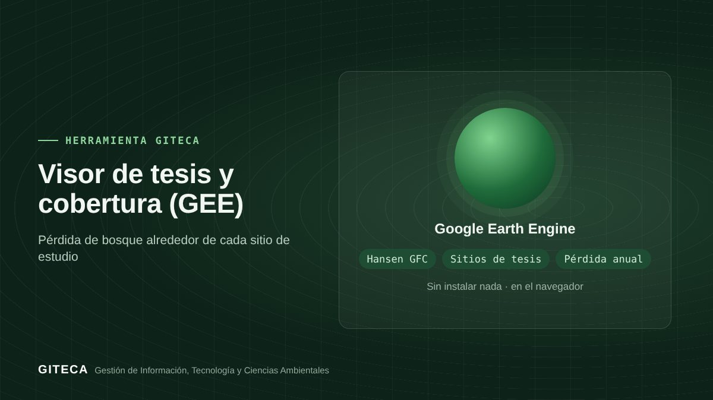

¿Sigue en pie el bosque donde se hizo tu tesis?
App de Google Earth Engine que calcula el bosque del año 2000 y la pérdida anual 2001–2023 alrededor de un sitio de tesis de la FCF-UNAP o de tu propia área.
Abrir la app en Earth Engine ↗Gratis, sin instalar nada.

Las tesis describen el bosque de un momento. ¿Cuánto ha cambiado desde entonces?
El Visor parte de los sitios de las tesis forestales de la UNAP (o del área que dibujes) y usa la serie de pérdida de bosque de Hansen et al. para mostrar cuánto bosque había en el año 2000 y cuánto se perdió cada año hasta 2023.
Antes y ahora
El proceso de siempre
- Ubicar el sitio de la tesis a partir del texto.
- Descargar la serie de pérdida de bosque y recortarla en un SIG.
- Calcular la pérdida por año alrededor del sitio.
Con la herramienta
- Eliges un sitio de tesis (radio de 3 km) o dibujas tu área.
- La app calcula el bosque del año 2000 y la pérdida 2001–2023.
- Ves el mapa por año de pérdida, el gráfico anual y la proporción perdida, y descargas la ficha.
Tiempos de referencia estimados por el equipo GITECA; varían según el tamaño del área y la experiencia del usuario.
Qué hace
- Bosque del año 2000 (dosel ≥ 30 %) y pérdida 2001–2023 (Hansen GFC).
- Gráfico de hectáreas perdidas por año y proporción perdida.
- Sitios de tesis FCF-UNAP o área dibujada, hasta 50 000 ha.
- Ficha descargable en CSV, GeoJSON, KML o SHP.
Para quién es
Empieza en 3 pasos
- Abre la app en el navegador.
- Elige un sitio o dibuja tu área.
- Lee el gráfico de pérdida y descarga los resultados.
Visor de tesis y cobertura (GEE)Gratis, sin instalar nada.
Abrir la app en Earth Engine ↗
Ten en cuenta: Las coordenadas de los sitios de tesis son aproximadas, a nivel de localidad. ¿Necesitas adaptarla a tu proyecto o capacitar a tu equipo? Escríbenos.